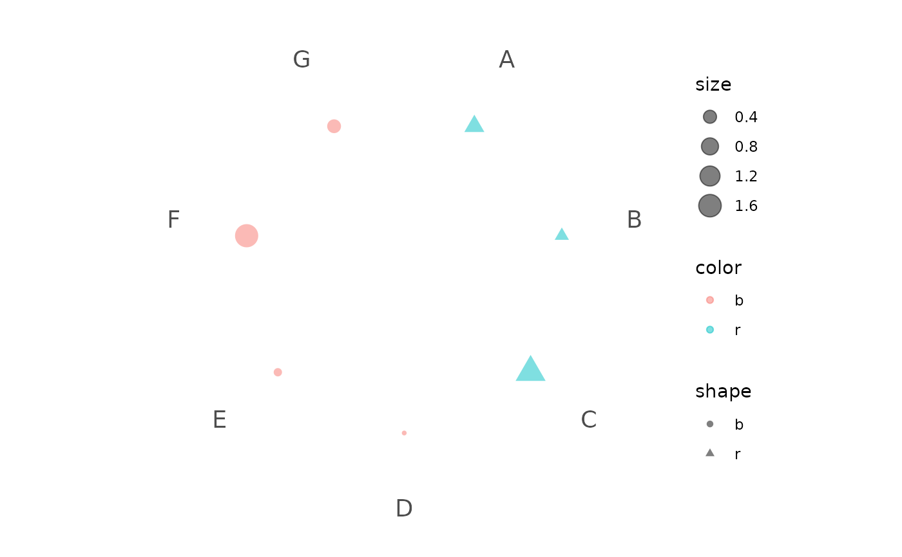
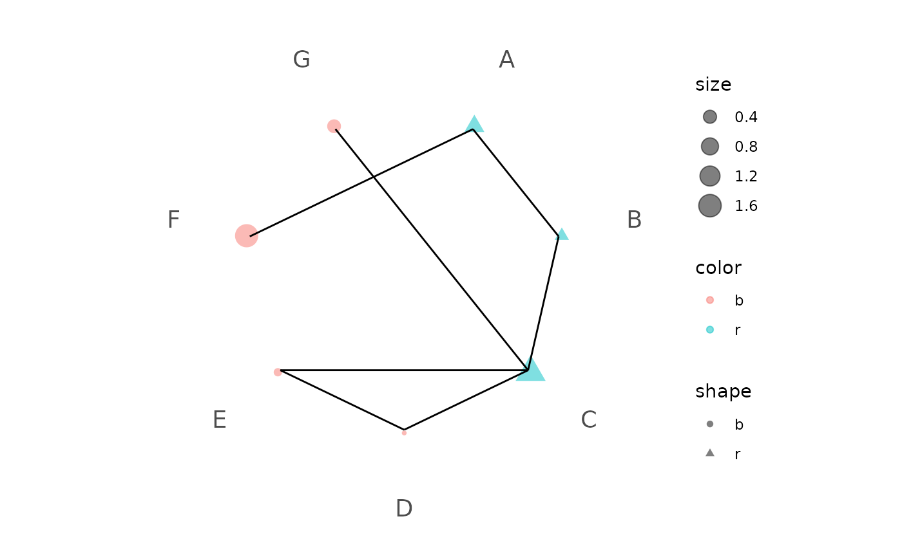
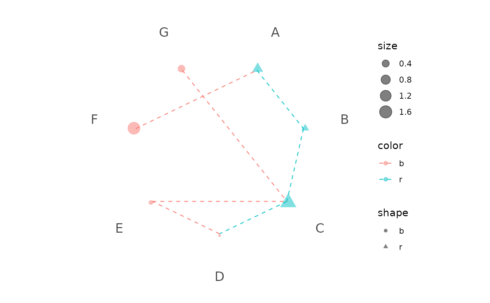
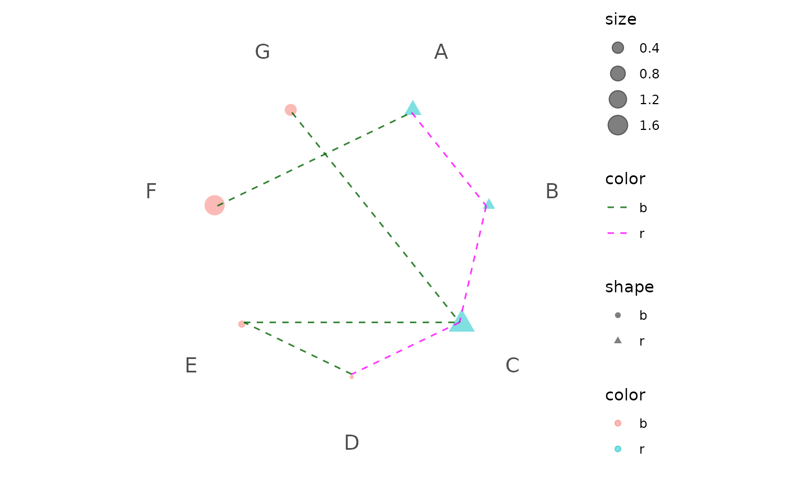

Init a dot plot in polar system
Arguments
- data
a
data.framecontains all events, e.g., genes.- x
the column name (without quote) storing event list.
- ...
parameters passing to ggplot2::geom_point.
Examples
library(ggplot2)
# -------------------
# Init a polar plot
# -------------------
data <- data.frame(x = LETTERS[1:7])
p1 <- polar_init(data, x = x)
p1

# Set aes value
p2 <- polar_init(data, x = x, size = 3, color = "red", alpha = 0.5)
p2

# Set aes mapping
set.seed(123L)
data1 <- data.frame(
x = LETTERS[1:7],
shape = c("r", "r", "r", "b", "b", "b", "b"),
color = c("r", "r", "r", "b", "b", "b", "b"),
size = abs(rnorm(7))
)
# Check https://ggplot2.tidyverse.org/reference/geom_point.html
# for how to use both stroke and color
p3 <- polar_init(data1, x = x, aes(size = size, color = color, shape = shape), alpha = 0.5)
p3

# --------------------
# Connect polar dots
# --------------------
data2 <- data.frame(
x1 = LETTERS[1:7],
x2 = c("B", "C", "D", "E", "C", "A", "C"),
color = c("r", "r", "r", "b", "b", "b", "b")
)
p4 <- p3 + polar_connect(data2, x1, x2)
p4

# Unlike polar_init, mappings don't need to be included in aes()
p5 <- p3 + polar_connect(data2, x1, x2, color = color, alpha = 0.8, linetype = 2)
p5

# Use two different color scales
if (requireNamespace("ggnewscale")) {
library(ggnewscale)
p6 = p3 +
new_scale("color") +
polar_connect(data2, x1, x2, color = color, alpha = 0.8, linetype = 2)
p6 + scale_color_brewer()
p6 + scale_color_manual(values = c("darkgreen", "magenta"))
}
#> Loading required namespace: ggnewscale
